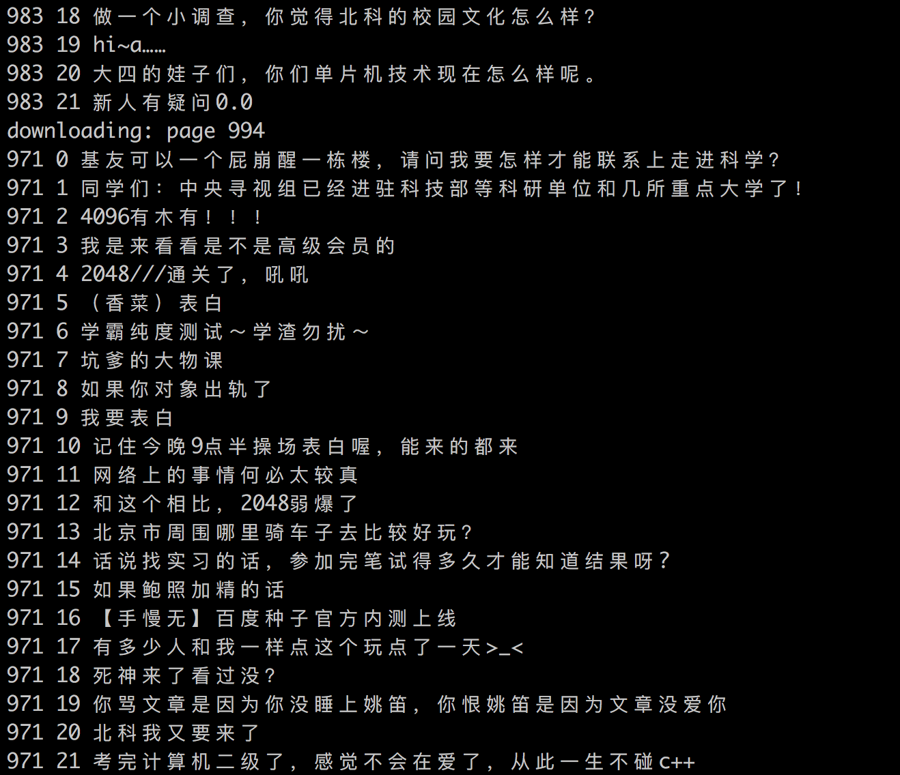

案例介绍
从本章开始，我们将要开始进入最后的案例实践篇。
在爬取数据之后，我们一般会怎么用数据呢？一般来讲，我们可能会做一个搜索引擎，比如说我们爬了新闻，可能会做一个新闻的搜索；爬取了小说可能做一个小说的搜索。
本案例将要爬取北科贴吧的帖子数据，并在此基础上构建一个简单的搜索功能。
百度贴吧分析
这里我们首先打开北京科技大学的百度贴吧：http://tieba.baidu.com/f?kw=北京科技大学

我们的目标是关注帖子的标题名称，比如这个：“北邮人下载需要流量吗”，“请问一下学长学姐，全国大学生数学竞赛初赛全国一等奖在咱们学校”。
还有就是我们肯定不能只爬取一页的信息，这里我们将要爬取前1000页的信息。
页面分析
首先我们打开Chrome开发者工具看一下列表如何解析。
这里我们选中一个标题名称后，可以直接看到一个a标签，它的class为j_th_tit。
所以使用以下代码就可以打印出所有的标题来。
1 | soup = BeautifulSoup(resp.content, "html.parser") |
分页分析
页面分析完了之后就可以分析一下分页了，我们把小箭头晃到底部分页的位置。
可以发现分页对应的网址主要是pn的值不一样。第2页对应50，第3页对应100，第4页对应150。
也就是，$$pn=(page-1)*50$$这样的关系。
爬虫编写
完成以上的分析工作之后，就可以开始实现我们的爬虫了。
数据库操作
首先是数据库的操作，这里使用到tieba数据库的beike集合。然后保存文档的话就直接insert就好了。
1 | def init_collection(): |
任务初始化
下面，我们不编写worker，而是先进行任务的初始化。
1 | if __name__ == '__main__': |
这里我们首先初始化SimpleCrawler，然后给添加worker以及task。
关于task，可以看到上面的代码通过循环，添加了10个任务，每个任务的page属性不一样。worker肯定是爬取某一页并解析加入数据库的代码，我们这里其实就是添加了爬取前10页的任务。
这里虽然也可以写直接添加爬取前1000页的任务，但是考虑到实际情况下任务可能会非常多，为了让任务队列不溢出，开始可以少添加一些。
Worker编写
接下来是worker的编写。
首先worker肯定要有三个基础部分：下载页面、解析页面、保存数据。除此之外，因为要爬取1000页，所以还要添加新的任务来爬取剩下的990。
这里可以判断当前页码+10是否大于1000，如果不大于的话把当前页码+10的网页添加到新的任务队列中。
1 | def worker(queue, task, lock): |
运行效果
以上就是爬虫的全部代码，运行后可以看到类型下面的结果。

通过以上代码大概爬了4万多条数据，之后的两章我们将把这些标题当做语料库，然后对这些数据进行搜索。
说明
网站可能会经常变化，如果上述爬虫不能用的话，可以爬取我保存下来的贴吧网页：http://nladuo.cn/beike_tieba/1.html。
分页的格式类似于1.html、2.html、…、1000.html。